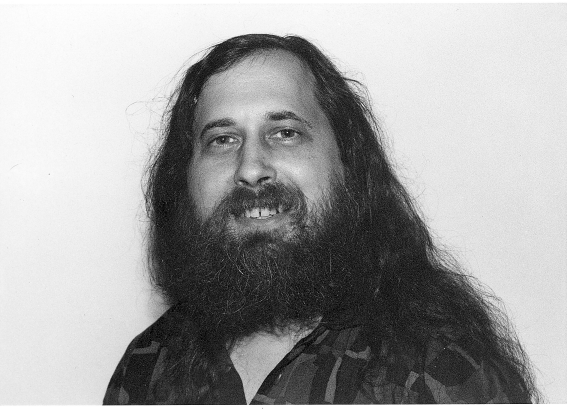

Richard Matthew Stallman es desarrollador de software y activista de la libertad del software. Nacido en 1953, asistió a Harvard University desde 1970 y se graduó con el título de Bachelor of Arts in physics. Desde Septiembre de 1974 hasta Junio de 1975 fue estudiante de postgrado de física en el MIT.

Trabajó en el laboratorio de Inteligencia Artificial del MIT desde 1971 hasta 1984, aprendiendo y desarrollando sistemas operativos, a excepción del año en que se convirtió en estudiante de postgrado. Escribió el primer editor de texto llamado Emacs por el año 1976 y desarrolló la técnica de Inteligencia Artificial backtracking por dependencia directa, también conocida como mantenimiento de la verdad.
En 1983, Stallman anunció el proyecto de desarrollo del sistema operativo GNU, un sistema operativo Unix-like con la intención de ser enteramente software libre, y del que ha sido líder de proyecto desde entonces. Junto a dicho anuncio, lanzó el Free Software Movement.
Stallman empezó con su trabajo en este proyecto el 5 de Enero de 1984, para lo que debió dejar su empleo en el MIT. En Octubre de 1985 inició la Free Software Foundation, de la cual es presidente como voluntario con dedicación de tiempo completo. Stallman desarrolló una serie de componentes software del sistema GNU ampliamente usados: el compilador C de GNU, el depurador para el compilador de GNU (GDB) y GNU Emacs, entre otros.
El sistema GNU/Linux, que es una variante de GNU que contiene el kernel desarrollado por Linus Torvalds, es usado en cientos de millones de ordenadores y actualmente es preinstalado en las computadoras disponibles a la venta en las tiendas. Sin embargo, usualmente los distribuidores de esos sistemas hacen caso omiso a las ideas de libertad que hacen al software libre tan importante y, eventualmente, incluyen software no libre.
Es por ello que, desde mediados de los años 90, Stallman ha dedicado gran parte de su tiempo a la defensa política del software libre, difundiendo las ideas éticas del movimiento, así como haciendo campaña en contra de las patentes del software y extensiones peligrosas de las leyes de derechos de autor.
Stallman promovió el concepto de copyleft y es el autor principal de la GNU General Public License, la licencia de software más ampliamente usada, la cual implementa copyleft.
Stallman imparte conferencias acerca del software libre y temas vinculados. Los títulos más comunes de sus charlas son “El sistema operativo GNU y el movimiento del Software Libre", "Los peligros de las patentes de software", y "Copyright y comunidad en la era de las redes de computadoras". Un cuarto tema común de sus conferencias consiste en explicar los cambios en la versión 3 de la GNU General Public License, que fue lanzada en Junio de 2007. También, “Una sociedad digital libre” es otro tema que trata diferentes aspectos acerca de la libertad de los usuarios en la actualidad.
En 1999, Stallman convocó al desarrolló de una enciclopedia libre en línea con el objetivo de invitar al público a contribuir con artículos.
Stallman es oficialmente Científico visitante en el MIT.
Free Software, Free Society es el libro de ensayos de Richard Stallman. Su “semi autobiografía”, Free as in Freedom, brinda más información biográfica acerca de su persona.
Richard Stallman ha recibido los siguientes reconocimientos:
- 1986: Membresía honoraria vitalicia en Chalmers Computer Society.
- 1990: MacArthur Foundation Fellowship.
- 1990: Galardón Grace Murray Hopper Award de The Association for Computing. Machinery "Por liderar el trabajo para el desarrollo de EMACS (Editing Macros)".
- 1996: Doctorado Honoris Causa por la Sweden's Royal Institute of Technology.
- 1998: Electronic Frontier Foundation's Pioneer award.
- 1999: Galardón Yuri Rubinsky Memorial Award.
- 2001: Galardón The Takeda Techno-Entrepreneurship Award de la Social/Economic Well-Being.
- 2001: Doctorado Honoris Causa por la University of Glasgow.
- 2002: Membresía de la United States National Academy of Engineering.
- 2003: Doctorado Honoris Causa por la Vrije Universiteit Brussel.
- 2003: Profesorado Honorario por la Universidad Nacional de Ingeniería del Perú.
- 2004: Doctorado Honoris Causa por la Universidad Nacional de Salta, Argentina.
- 2004: Profesorado Honorario por la Universidad Tecnológica del Perú.
- 2005: Premio Fondazione Pistoletto.
- 2007: Profesorado Honorario por la Universidad Inca Garcilaso de la Vega, Perú.
- 2007: Primer Premio Internacional Extremadura al Conocimiento Libre.
- 2007: Doctorado Honoris Causa por la Universidad de Los Ángeles de Chimbote, Perú.
- 2007: Doctorado Honoris Causa por la University of Pavia.
- 2008: Doctorado Honoris Causa por la Universidad Nacional de Trujillo, Perú.
- 2009: Doctorado Honoris Causa por la Lakehead University, Canadá.
- 2011: Doctorado Honoris Causa por la Universidad Nacional de Córdoba, Argentina
- 2012: Doctorado Honoris Causa por la Universidad César Vallejo de Trujillo, Perú.
- 2012: Doctorado Honoris Causa por la Universidad Latinoamericana Cima de Tacna, Perú.
- 2012: Doctorado Honoris Causa por la Universidad José Faustino Sánchez Carrión, Perú.
- 2013: Inclusión en Internet Hall of Fame
- 2014: Doctorado Honoris Causa por la Concordia University, Canadá.
- 2015: Doctorado Honoris Causa por la Universidad las Américas, Perú.
- 2016: Galardón Software and Systems Award de The Association for Computing Machinery “por el desarrollo de GCC, GNU Compiler Collection”.
- 2016: Doctorado Honoris Causa por la Université Pierre et Marie Curie, Francia.
Esta es una traducción NO OFICIAL de la biografía original en idioma inglés que se encuentra en https://stallman.org/biographies.html